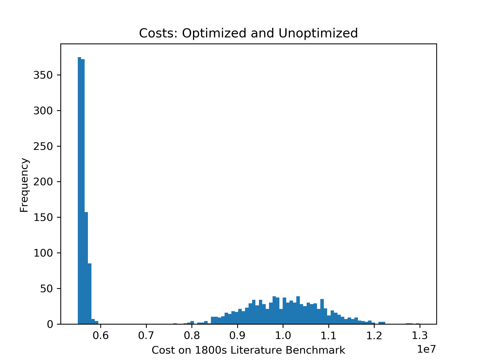
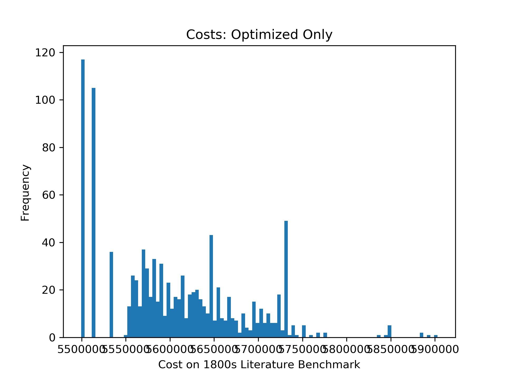

Tuning a Typewriter
Tuesday, November 20, 2018 · 3 min read
I recently read this Atlantic piece on input methods for computers, and it reminded me of a mathematical adventure I had this summer that I should have blogged about at the time.
Back in July, I was exploring the City Museum of New York when I came across this lovely Crown typewriter from the late 1800s. By our modern standards, it uses a rather clunky input mechanism: you manually shift the pointer to the character you want to type, press the button, rinse, repeat.

“What a waste of time,” you say. Ah, but even in the late 19th centure time was the essential ingredient, and in the modern world there was no time. Notice, then, that the designers of the Crown typewriter did not place the letters in alphabetical order. Instead, the they placed commonly-together letters near each other. You can type “AND” and “THE” rather quickly with just 2 shifts apiece; “GIG,” on the other hand, takes 15 shifts from the G to the I, and 15 shifts back to the G.
The question, then, begs to be asked: is this the most efficient permutation of letters? For example, Q and U are on opposite ends of the typewriter; surely it would be better to put them together?
I have a doubly disappointing answer to this question: first, this is not the most efficient permutation of letters (based on my digraph frequency map), but I also don’t know what the most efficient permutation is! That is, I’ve found permutations that are more efficient, but cannot prove that they are optimal — after all, exploring all 26-factorial permutations is not an option.
My “cost” metric here is defined as “Ignoring non-alphabetic characters, how many shifts does it take to type all of Pride and Prejudice followed by all of The Time Traveller followed by all of The Adventures of Sherlock Holmes?” (All three are classic 19th-century novels available from Project Gutenberg.)
By this metric, the naive alphabetical order (ABCDEFGHIJKLMNOPQRSTUVWXYZ)
requires a whopping 9,630,941 shifts. In comparison, the Crown Typewriter
(XQKGBPMCOFLANDTHERISUWYJVZ) requires only 6,283,692 shifts. But the
ComfortablyNumbered typewriter (ZKVGWCDNIAHTESROLUMFYBPXJQ) requires a mere
5,499,341 shifts. This means we can save nearly one in eight shifts from the
Crown typewriter!
I found this permutation with the following algorithm: start with a random permutation, then “optimize” it by repeatedly swapping characters such that the post-swap permutation has a lower cost than the pre-swap permutation. Continue “optimizing” until no further swaps can be made. Now, do this procedure for a large number of random starting permutations, and pick the lowest-cost optimized permutation.
Encouragingly, it turns out that many different random starts get optimized to my solution. What do I mean by that? Well, the graph below shows two datasets: the costs of 1,000 random permutations and the costs of those permutations once optimized. Clearly, optimization is doing great good.

But let’s zoom in on the optimized permutations. Notice that the two lowest-cost bars are almost an order of magnitude more frequent than the remaining bars. In fact, the lower-cost bar’s “bucket” in the histogram is populated only with permutations of cost 5499341! This suggests that 5499341 is a “hard ceiling” for my optimizer, rather than the furthest point on the tip of a long tail that my optimizer samples from.

Of course, this is no proof: there might be a single highly-efficient permutation that is hard to reach by optimizing a random permutation. But that feels unlikely!
So: I leave this as an open problem for readers to explore.
Update (Dec 15): I found this blog post by Dennis Yurichev that tackles the same problem, but restated as “in what order do I mount these devices on a rack if I want to minimize the total length of cables between them”? Dennis finds an optimal solution for 8 devices with Z3… perhaps the solution scales to 26 “devices”? Intriguingly, his post was published just weeks before my visit to the City Museum!
Update (Jan 28): @rjp on Github has posted a blog post with several new approaches to this problem!